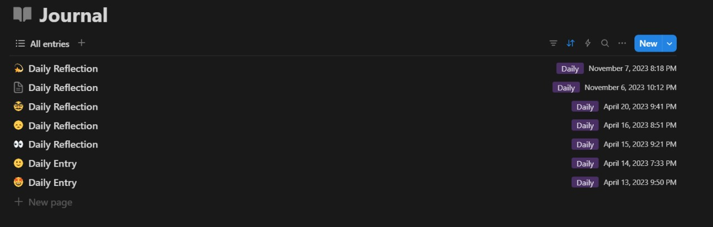

31 March 2025
preparation.
today i will talk about how i created this website, nothing else.
March 30 2025
been a day since my last school exam finished, and now I sat back on my chair thinking what I would do now.
Thought about getting a guitar, but that was too far-fetched since I wouldn't have the time to learn guitar in college.
so i decided to work on a journal which I had been putting off since a month.
FYI I had always wanted to create an online journal, in fact I did create one on Notion in 2023, which died out pretty quickly cause I didn't feel a spark. Hopefully this lasts. :O

My abandoned 2023 Notion journal
So I set out to create a custom journal from scratch.
I planned to learn HTML, CSS, MD, and JS for creating the website, but I was too lazy. (So I just ChatGPT-ed instead.)
April 01 2025
After 2 days of coding, testing designs, passwords(this part troubled me the most), endless black screens, setting easter eggs and HTML structures, I finally finished this site today.
shoutout to Atharva Kokane's online journal which inspired me to build this. https://atharvakokane.github.io/
also shoutout to ChatGPT and DeepSeek for convincing me that CS is dead 😭.
— utkarsh